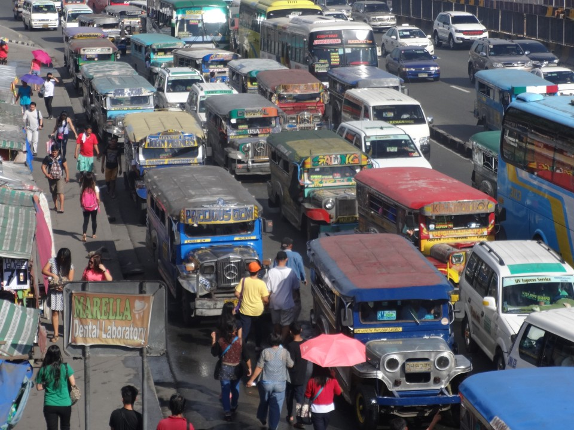

TagaLLM
✦ Usapang Pinoy · Chat demo
Tara, kuwentuhan.
Makipag-usap sa TagaLLM sa Tagalog o Taglish.

Binubuksan ang React demo…
✦ Usapang Pinoy · Chat demo
Makipag-usap sa TagaLLM sa Tagalog o Taglish.

Binubuksan ang React demo…